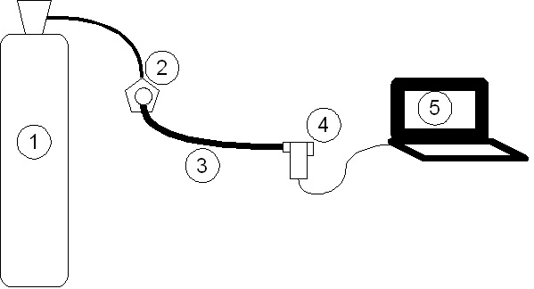

Sport Asthma has created a portable product to allow an easy and convenient way to test athletes for EIA.
We can provide a complete EVH testing unit alternatively, when you contact us we will work with you to build the most cost-effective solution based upon your current equipment.
Unique features of Sport Asthma's EVH equipment:
Eucapnic Voluntary Hyperpnea equipment:

| Components | Recommedations/Specifications | |
|---|---|---|
| 1. | Gas | Medical grade; composition - 5% CO2:21% O2:74% N2 |
| 2. | Hyperpnea apparatus | High-pressure / demand-valve / exhaust coupling |
| 3. | Low-pressure tubing | 30mm tubing |
| 4. | Pneumotachometer | Measures gas flow |
| 5. | Bespoke EVH software | |